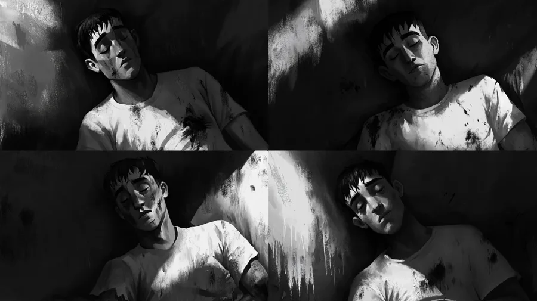

Tencent News
Internship
Focusing on growth business needs in WeChat plugins and individual exploratory business needs.
UX Designer & AI Coding
View project正在准备作品集
Empathetic.
Inventive.
Analytical.
An experience designer driven by interactive narratives and AI technology, exploring diverse possibilities in design.
2023—2026
Focusing on growth business needs in WeChat plugins and individual exploratory business needs.
UX Designer & AI Coding
View projectIndependent ideas developed through user research, prototyping and iterative validation.
UX Designer & Developer
View projectArtistic narratives and interactive installations. Exploring how people, technology and materials connect.
HCI Designer & Programmer
View project
Explorations in AI-generated imagery, 3D modeling, multimedia art and Arduino programming.
AIGC & Programmer
View project